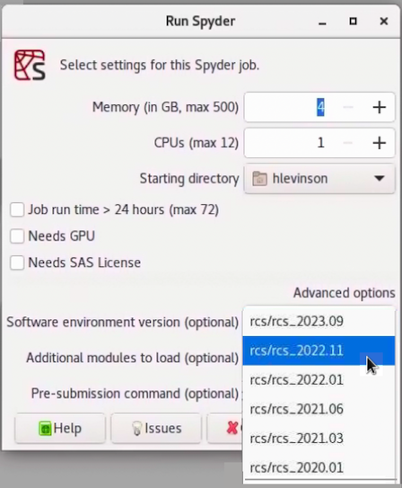

📦 Use Software Versions
A huge range of software applications, utilities, and libraries are installed and configured for you. Whether you need Rstudio or Spyder, Julia running in VSCode, popular R or Python packages, of fully configured Jupyter Notebooks, we have you covered.
Available software
The list of installed software is so large we make no effort to enumerate everything here, but you can always get an up-to-date list by opening a terminal on the Grid and running
conda list
Start with the expectation that all the software you need is already installed and ready to use. If that expectation is ever broken please put in a request using our discussion forum or issue tracker.
Using older software environments
Each time we update our software environments we preserve previous versions so that you can roll back for reproducibility or if your code stops working after an update. This section details the specific software environment versions available.
As an illustration of the benefits of preserving historical software environments, imagine that you have a python project and that your Pandas code no longer works with the latest Pandas release in the current software environment. In that case you can start Spyder and revert to a previous software environment in order to run your analysis using an older version of Pandas. The screen-shot below shows how to use the Software environment version selector to run and older version of python.

Software environments are named following a rcs_year.version scheme.
For example, the first environment released in 2021 is named
rcs_2021.01. The list below shows you key information about each
environment, including a command that you can run from the terminal to
get a detailed software version list.
Software environment versions
Current and historical software environments are described below.
rcs_2022.01
After more than 6 months of hard work, the HBS grid technology preview software environment version 2022.01 was released in January 2022! This environment remains a technology preview and any and all use is at your own risk.
This technology preview software environment is a user-friendly set of software and utilities designed to make data science and statistics easier for HBS Grid users. If you have not yet done so, you can try it by following the quick-start guide.
If you are already using the technology preview environment you will be prompted to upgrade next time you log in to the HBS Grid. As always you can continue using previous versions if needed, as described in the environments documentation.
In this release we have added a large number of new statistics and data science applications and packages, including:
- JASP, a free menu-driven statistics application similar to SPSS
- Cytoscape, an open source software platform for visualizing complex networks,
- DuckDB, an in-process SQL OLAP database management system
- texminer, functions for text mining and topic modeling in R
- Dedupe, a library that uses machine learning to perform de-duplication and entity resolution in Python
- awscli, a unified tool to manage your AWS services
- snakemake, a workflow management system to create reproducible and scalable data analyses
and many many more!
If you find a software program that you need is not yet available please let us know and we will try to install it for you.
The 2022.01 release also brings a huge number of application and package updates, including:
- Python updated to 3.9.9
- R updated to 4.1.1
- Octave updaed to 6.4
- Julia updated to 1.7.1
- RStudio updated to 2021.09.1
- Spyder updated to 5.2.1
- LibreOffice updated to 7.1.8
- VSCode updated to 1.63.2
- Emacs updated to 27.2
- Arrow (C++, R and Python) updated to 6.0
- Tensorflow updated to 2.7
- PyTorch updated to 1.10.0
- CUDA toolkit updated to 11.5.0
- Jupyterlab updated to 3.10
- MKL updated to 2021.4.0
and hundreds of others.
In this release we have also dropped support for several infrequently used programs:
- OCRfeeder -- use gImageReader for OCR instead
- Gephi -- replaced by Cytoscape for network visualization
- PSPP -- replaced by JASP, a modern statistics GUI that uses R under the hood
- Meld -- use Diffuse for graphical text comparisony
Documentation is available on line or via the HBS Grid help application on the Grid. If you have any difficulties or feature requests please reach out on the discussion forum.
VirtualBox image available for download from Dropbox and can be imported and run locally for convenience, reproducibility, or testing purposes.
For complete environment details, open a terminal and run
conda env export -n rcs_2022.01
rcs_2021.06
The rcs_2021.06 environment was released in May 2021. It includes updated
Octave, Python, QGIS, R, Stata, and other software. Key software versions included in this
environment are listed below.
- CUDAtoolkit 11.2
- Spyder 5.0
- Texlive 2021
- Emacs 27.2
- Julia 1.6.1
- Jupyterlab 3.0
- Mathematica 12
- Matlab R2021a
- Numpy 1.20
- Octave 6.2
- Pandas 1.2
- Python 3.9
- Pytorch 1.8
- QGIS 3.18
- R 4.0
- R-tidyverse 1.3
- SAS 9.4
- Stata 17
- Tensorflow 2.4
For complete environment details, open a terminal and run
conda env export -n rcs_2021.06
rcs_2021.03
The rcs_2021.03 environment was released in March 2021. It includes updated
Octave, Python, QGIS, R, Stata, and other software. Key software versions included in this
environment are listed below.
- CUDAtoolkit 10.1
- Emacs 27.1
- Julia 1.5.3
- Jupyterlab 3.0
- Mathematica 12
- Matlab R2020a
- Numpy 1.20
- Octave 6.2
- Pandas 1.2
- Python 3.8
- Pytorch 1.7
- QGIS 3.16
- R 4.0
- R-tidyverse 1.3
- SAS 9.4
- Stata 16
- Tensorflow 2.2
For complete environment details, open a terminal and run
conda env export -n rcs_2021.03
rcs_2020.01
The rcs_2020.01 environment was released in March 2020. It includes updated
Octave, Python, QGIS, R, Stata, and other software. Key software versions included in this
environment are listed below.
- CUDAtoolkit 10.1
- Emacs 27.1
- Julia 1.5.3
- Jupyterlab 2
- Mathematica 12
- Matlab R2019a
- Numpy 1.19
- Octave 6.2
- Pandas 1.2
- Python 3.7
- R 3.6
- R-tidyverse 1.2
- SAS 9.4
- Stata 15
- Tensorflow 2.2
For complete environment details, open a terminal and run
conda env export -n rcs_2020.01